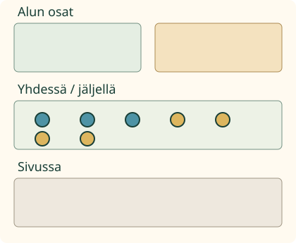
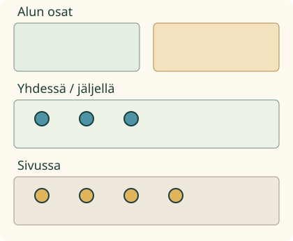

Loikalla on merkkejä. Aava antaa 4 lisää. Nyt merkkejä on 7. Montako oli aluksi?
Lisäyksen voi purkaa
Yhdistän osat ja puran saman lisäyksen. Kolme ja neljä tekevät seitsemän. Kun otat lisätyt neljä sivuun, jäljelle jää alkuperäinen kolme.

3 + 4 = 7. Sama koko voidaan jakaa takaisin osiin: 7 − 4 = 3.
Ilman liikkuvaa kuvaa: yhdistä pöydällä 3 ja 4 merkkiä. Siirrä lisätyt 4 sivuun ja palauta ne. Samat 7 merkkiä pysyvät mukana.
Kokeile myös toista osaa

Voit ottaa seitsemästä myös kolme pois. Jää neljä: 7 − 3 = 4. Vähennyslaskun alkuun tulee koko määrä.
Ennusta: palauttaako 7 + 4 alkuperäisen kolmen?
Katso ajatus
Ei. Se lisäisi vielä neljä. Lisäys puretaan ottamalla lisätty osa pois. Palauttamalla sivuun otetut merkit saat taas koko seitsemän.
Sama ajatus korttirasialla
Rasiaan lisätään 3 korttia. Nyt niitä on 8. Aluksi oli 5: 8 − 3 = 5. Tarkista palauttamalla lisäys: 5 + 3 = 8.
Apua
Pidä koko määrä ja kaksi osaa näkyvissä. Sivuun siirretty osa kuuluu edelleen samaan alkuperäiseen joukkoon. Vähennyslaskussa kysytään, paljonko valittuun paikkaan jää. Merkkien värit auttavat seuraamaan samoja osia.
Laskupaikoissa merkit − ja = ovat valmiina. Ensimmäiseksi tulee koko, sitten yksi osa ja lopuksi toinen osa. Voit käyttää kumpaa tahansa pätevää vähennyslaskua.
Tutki lisää
Osat ovat 3 ja 3. Koko on 6. Nyt 6 − 3 = 3 tulee kummallakin tavalla samaksi laskuksi. Neljää erilaista laskua ei tarvitse keksiä.
Entä jos lisää tulee 0? Neljä pysyy neljänä: 4 + 0 = 4 ja 4 − 0 = 4. Kun otat kaikki neljä sivuun, jää 0: 4 − 4 = 0.
Opettajalle ja ilman ruutua
Vuosiluokat 1–2, kanoninen procedure/atomic. Vaadittu JA-ryhmä on M-ADD-01 ja M-SUB-01. Lukualue tässä 0–10; Lite-harjoituksessa lukuja voi tulla 18:aan asti. Valmistele suurempien kokonaismäärien käsittely erikseen tai rajaa tästä tunnista luvattu valmius 0–10-malleihin. Sama KC ei takaa samaa lukualuetta; nolla ja merkit selitetään tarvittaessa tukena. Lukusuora ja taaksepäin laskeminen eivät ole uusi avausportti. Aikuinen saa lukea; esineiden nimeämistä, puhetta tai laskutaputuksia ei vaadita.
Mallin samat merkit ovat alun osissa, keskellä tai sivussa. Liikkeen aikana koko määrä säilyy; kesken olevaa siirtoa ei nimetä valmiiksi vähennykseksi. 1,2 sekuntia per vaihe on katselutahti. Toisto ja askellus ovat vapaaehtoisia. Numero- ja laskutehtävän palaute ovat erillisiä; mallin katsominen ei muuta niiden kysymystä. Malli ja luvut antavat tukea, joten oikea vastaus ei osoita itsenäistä strategiaa.
Lukupaikkojen täydentäminen tarkistaa yhden pätevän vähennyslaskun annetussa muodossa. Se ei osoita vapaan laskulauseen rakentamista tai koko laskuperheen tuottamista. Samojen osien molemmat poistot hyväksytään; yhtäsuurista osista ei vaadita kaksoiskappaleita. Ei henkilökohtaista historiaa, formaalia hallintaa tai oppimisvaikutuksen väitettä.
Ilman ruutua käytä kahta eriväristä merkkijoukkoa. Yhdistä, siirrä sama osa sivuun ja palauta. Pyydä lasta näyttämään, mikä oli koko ja mitkä olivat sen osat.
Lopuksi: miten voit tarkistaa vähennyksen palauttamalla pois otetun osan?
 Loikalla on merkkejä. Aava antaa 4 lisää. Nyt merkkejä on 7. Montako oli aluksi?
Loikalla on merkkejä. Aava antaa 4 lisää. Nyt merkkejä on 7. Montako oli aluksi?